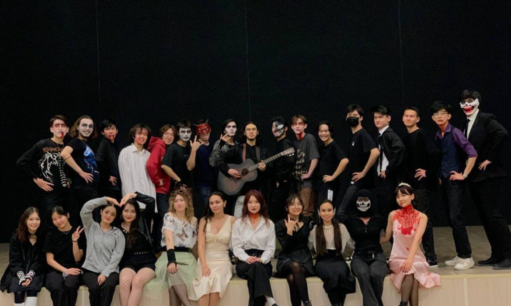

Live Performances & Stage Traditions
Throughout every academic term, the Astana IT University Music Club produces live concert programs across campus venues. Our performances range from high-energy arena sets during university marathons to quiet, candlelit acoustic evenings in the lounge. Live events give student bands the opportunity to perform in front of peers, test their original arrangements, and master live stage presence.
Our annual performance cycle begins with the traditional Halloween Concert on October 31, where bands perform themed sets in stage makeup, followed by our celebratory New Year Concert around December 29. In the spring term, we deliver special romantic sets on February 14, energize athletes at the AITU Run on April 3, host the intimate Acoustic Night on May 18, and conclude the academic year with the massive Bye Bye Party on June 12.
